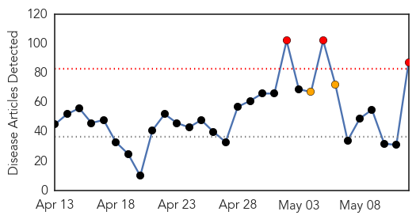
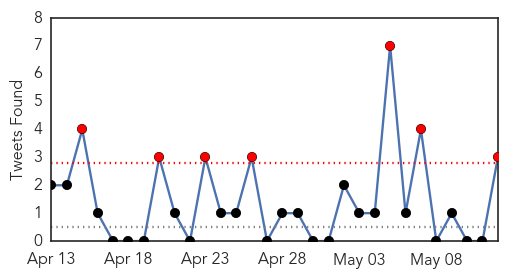
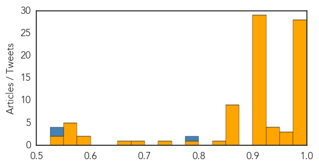

Toggle navigation
Early Warning
Daily Alerts
Unknown
May 12, 2014
Compare to:
-
Dengue Fever
Hemmorhagic Fever
Mold/Fungal Infection
Influenza
Meningitis
Pertussis / Whooping Cough
Middle East Respiratory Syndrome
Cholera
Hepatitis
Chikungunya
Yellow Fever
Bubonic Plague
West Nile Virus
Swine Flu
Ebola
Measles
Mumps
30 Day Trends
Web: 3
alerts
, 2
warnings
Twitter: 7
alerts
, 0
warnings
Top Articles:
Showing top 50 articles...
0.999
Deadly MERS Virus Detected In Florida
0.999
UPDATE 2-U.S. confirms second case of MERS, this time in Florida
0.999
1st Middle East Respiratory Syndrome case in Florida reported
0.999
1st Middle East Respiratory Syndrome case in Florida reported
0.999
2nd MERS Case Identified in U.S.
0.999
The Chosun Ilbo (English Edition): Daily News from Korea
0.998
Officials confirm MERS patient being treated at Fla. hospital
0.998
US reports second case of MERS virus
0.998
Deadly MERS Virus Detected In Florida : Shots
0.998
Second case of deadly MERS virus emerges in US
0.997
MERS case confirmed in Orlando
0.997
US reports second case of MERS virus
0.997
Florida health officials, CDC confirm second U.S. case of MERS
0.996
Doctors say Orlando MERS patient improving
0.996
Officials Confirm Second U.S. Case of MERS
0.995
CDC: Second US Case Of Deadly Middle Eastern Virus 'Unwelcome But Not Unexpected'
0.994
Second US MERS Case Found in Florida
0.994
Egypt’s only MERS case cured: Hospital director
0.992
A second case of the MERS virus has been identified in the US
0.991
Saudi- Myths and misconceptions about the MERS coronavirus
0.991
Health officials confirm second case of mysterious MERS virus in U.S.
0.988
2nd US Case of Mysterious MERS Virus
0.987
Indiana Hospital Taps Health IT To Contain MERS Outbreak
0.985
How an Indiana hospital got it right when MERS showed up at the door
0.984
Hospital workers exposed to MERS to return to work
0.984
Hospital workers exposed to MERS to return to work in Lake County
0.979
US reports second imported case of MERS
0.978
MERS Patient Released From Hospital
0.963
US experts join battle against MERSHealthcare
0.957
Second MERS case in U.S. highlights CDC defensive role
0.955
CDC Confirms Second MERS Case In U.S., Says Traveler Came Through Atlanta
0.949
Second Case Of Mysterious Virus Confirmed In U.S.
0.939
Saudi Arabia warns of MERS risk from camels
0.938
Media blamed for panic over deadly virusHealthcare
0.932
Saudi pharmacies urged not to exploit MERS fears
0.922
Harsh winter does little to ease Lyme disease woes
0.917
Chicago Tribune
0.917
Chicago Tribune
0.917
Chicago Tribune
0.917
Chicago Tribune
0.917
Chicago Tribune
0.917
Chicago Tribune
0.917
Chicago Tribune
0.917
Chicago Tribune
0.917
Chicago Tribune
0.917
Chicago Tribune
0.917
Chicago Tribune
0.917
Chicago Tribune
0.917
Chicago Tribune
0.917
Chicago Tribune
Top Tweets:
0.789
RT: British health authorities say have detected second case of Saudi MERS virus on flight from Jeddah via London to Un…
0.542
“@Lydi_DC: As of May 12 2014 MERS has 538 national laboratory confirmed cases and 145 deaths - reported to WHO.”
0.532
US health officials said on Monday a second case of MERS a deadly virus first discovered in the Middle East in...
http://t.co/2ASBHQTldN
Web/News Articles

Tweets

Article Locations
Article Confidences
